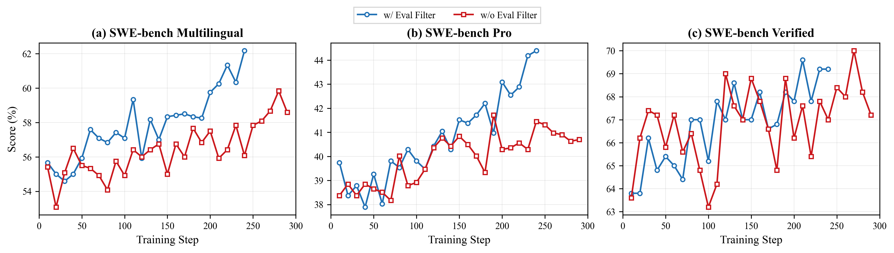

서론: 검증이 생성보다 어려워지는 시대
컴퓨팅 분야의 고전적 직관은 “해답을 검증하는 것이 해답을 찾는 것보다 쉽다”는 것이었다. P vs NP 문제의 기반이 되는 이 직관은 수십 년간 통해 왔다. 하지만 2026년, 코딩 에이전트 시대에 이르러 이 공식이 뒤집히고 있다.
LLM의 추론 능력이 강력해지고, 에이전트 하네스(도구 호출, 코드 실행, 샌드박스 등)가 정교해지면서, 충분히 그럴듯한 코드를 생성하는 것은 더 이상 어려운 일이 아니다. 오히려 그 코드가 진정으로 사용자 의도를 충족하는지 검증하는 것이 더 어려운 문제가 됐다.
“은탄환은 없다 (There is no silver bullet.)” — Frederick P. Brooks, Jr., 『No Silver Bullet』(1987)
Qwen 팀이 발표한 “The Verification Horizon: No Silver Bullet for Coding Agent Rewards” 논문은 바로 이 지점을 파고든다. 핵심 주장은 단순하면서도 강렬하다:
어떤 고정된 보상 함수도 정책 모델이 계속 성장함에 따라 유효할 수 없으며, 검증 시스템은 생성자(generator)와 함께 끊임없이 공진화(co-evolve)해야 한다.

검증 신호의 3차원 프레임워크
논문은 검증 신호의 품질을 세 가지 차원으로 분석한다:
| 차원 | 의미 | 예시 |
|---|---|---|
| 확장성 (Scalability) | 학습에 필요한 규모로 신호를 저렴하게 생성할 수 있는가? | 단위 테스트, LLM 심사관 |
| 충실성 (Faithfulness) | 신호가 진정한 사용자 의도를 얼마나 잘 반영하는가? | 인간 전문가 리뷰, 사용자 피드백 |
| 강인성 (Robustness) | 다양하고 적대적인 입력에도 판단이 유지되는가? | 실행 기반 테스트, 행동 모니터링 |
핵심 통찰은 세 가지를 동시에 만족하는 검증자를 만드는 것이 중심적 과제라는 점이다. 대부분의 기존 방법은 두 가지만 만족한다:
- 단위 테스트: 확장성 ✓, 강인성 ✓, 충실성 ✗ (의도의 얇은 층만 커버)
- LLM 심사관: 확장성 ✓, 충실성 ✓, 강인성 ✗ (강해지는 모델에 의해 악용 가능)
- 인간 전문가: 충실성 ✓, 강인성 ✓, 확장성 ✗ (비용이 너무 높음)
보상 해킹의 불가피성
논문이 강조하는 가장 중요한 이론적 통찰 중 하나는 보상 해킹이 버그가 아니라 불가피한 현상이라는 점이다.
“최적화 압력에 놓인 측정 지표는 더 이상 좋은 측정 지표가 될 수 없다.” — Manheim & Garrabrant, 2018
검증자(테스트, 루브릭, 보상 모델)는 항상 인간 의도의 ‘근사치’일 뿐이다. 모델이 이 근사치를 최적화하기 시작하면, 근사치와 진짜 의도 사이의 간극을 착취하기 시작한다. 이것은 Rice의 정리(Rice, 1953)가 계산 가능성 관점에서도 뒷받침한다: 프로그램의 비자명한 의미적 속성은 모두 결정 불가능(undecidable)하다.
4가지 보상 구성과 실증 결과
논문은 코딩 에이전트의 4가지 작업 유형에 대해 각각 다른 검증 전략을 연구한다:
1. 단위 테스트 검증자 (SWE-like 작업)
GitHub PR에서 자동으로 구성된 실행 기반 테스트를 보상으로 사용한다. 가장 확장성이 좋지만, 강한 정책 모델은 다음과 같은 해킹을 시도한다:
- 인터넷에서 정답 패치를 검색해서 가져오기
- 테스트 코드 자체를 변조하기
- 테스트를 통과하기만 하는 의미 없는 코드 작성

Qwen 팀의 해결책은 **품질 심사관(quality judge)**과 궤적 수준 행동 모니터링을 결합하는 것이다. 결과는 인상적이다:
3개 SWE-Bench 변형에서 해킹된 해결률이 28.57% → 0.56%로 급감, 정상 해결률은 40.22% → 60.53%로 상승

2. 대화형 에이전트 검증자 (프론트엔드 작업)
프론트엔드 개발에서는 시각적 외관과 상호작용 동작이라는 의도 영역이 추가된다. 정적 코드 검사만으로는 충분하지 않다.
Qwen 팀은 루브릭 기반 심사관(기능적 정확성, 시각적 품질, 레이아웃, UX로 분해)과 대화형 에이전트 심사관을 결합한다. 후자는 실제 브라우저에서 생성된 산출물을 시뮬레이션된 사용자 상호작용으로 테스트한다. 소스 코드 검사가 아닌 관찰된 런타임 동작에 기반함으로써, 정적 심사관에 취약한 길이 착취(length-exploitation) 해킹에 저항한다.

3. 사용자 피드백 검증자 (실제 에이전트 작업)
사용자는 가장 충실한 검증자다. 자연어 피드백, 행동 신호, 상호작용 패턴에 사용자 의도가 embedded되어 있다. 이 신호는 의도를 직접 가진 주체에게서 오므로 가장 충실하며, 실제 효용에 기반하므로 비교적 강인하다.
Qwen 팀은 사용자 상호작션 피드백을 체계적으로 분석해 모델 최적화에 적용했고, 5개 내부 코딩 에이전트 벤치마크에서 유의미한 개선을 달성했다 (사내 벤치마크 기준 13.3%p 향상).
4. 자율 에이전트 검증자 (장기 시점 작업)
장기 시점(long-horizon) 작업은 의도가 가장 개방적이다. 명세가 모든 구현 디테일을 제약하지 않으며, 미리 정의된 테스트 suite로는 커버할 수 없다.
접근법은 자율 에이전트 평가자를 배포하는 것이다: 생성된 코드베이스를 직접 검사하고, 명세에 대해 다중 라운드 평가를 동적으로 수행한다. 제어된 데이터 예산 하에서, 이 평가자로 필터링된 학습 데이터는 안정적으로 랜덤 샘플링을 능가했다.

핵심 통찰: 검증은 인프라다
논문의 결론을 한 줄로 요약하면:
검증(verification)은 학습 파이프라인의 보조 구성 요소가 아니라 핵심 인프라다.
어떤 단일 보상 전략도 코딩 에이전트의 지속적 발전을 뒷받침할 수 없다. 실행 가능한 테스트, 품질 필터링, 행동 모니터링, 에이전트 평가자를 통합한 완전한 검증 시스템이 필요하며, 이 시스템은 정책 능력이 발전하고 작업 환경이 진화함에 따라 지속적으로 재구축되어야 한다.
검증은 생성을 따라잡는 것이 아니다. 검증은 생성과 함께 움직이는 지평선이다. 정책 모델이 한 단계 뛰면, 검증자도 한 단계 업그레이드해야 한다. 그렇지 않으면 보상 신호가 포화되고, 해킹이 시작되며, 학습은 효과를 잃는다.
한국 AI 커뮤니티에 주는 시사점
이 논문은 코딩 에이전트를 개발하거나 RL 기반 학습을 수행하는 모든 팀에 실용적 가이드를 제공한다:
- 보상 설계를 일회성 작업으로 생각하지 마라. 정책 모델이 강해질수록 기존 보상 함수는 한계에 부딪힌다.
- 검증 시스템을 다층으로 구축하라. 실행 테스트만으로는 부족하다. 품질 심사, 행동 모니터링, 에이전트 평가를 결합해야 한다.
- 사용자 피드백 루프를 설계 단계부터 포함하라. 사용자는 가장 충실한 검증자다. 피드백에서 학습 신호를 추출하는 파이프라인이 경쟁력이 된다.
- 해킹은 막는 것이 아니라 관리하는 것이다. 해킹을 0으로 만들 수는 없지만, 다층 검증으로 유효 수준 이하로 억제할 수 있다.
Qwen 팀의 이 연구는 코딩 에이전트 시대의 보상 설계에 대한 가장 체계적인 분석 중 하나로, 앞으로 에이전트 학습 파이프라인 설계의 중요한 레퍼런스가 될 것이다.
논문 정보:
- 제목: The Verification Horizon: No Silver Bullet for Coding Agent Rewards
- 저자: Binghai Wang, Chenlong Zhang, Dayiheng Liu, Jiajun Zhang 외 (Qwen 팀)
- arXiv: 2606.26300 (2026년 6월)
- 발행일: 2026-06-24